Virtual Threads, Structured Concurrency & Scoped Values
A learner's companion to Balkrishna Rawool's Spring I/O talk on the three pillars of Project Loom. It distils the live-coding session into a structured, skimmable walkthrough with every code example from the demo, the architectural diagrams, and the exact Spring Boot / Java APIs you need to use them today.
Contents · 10 sections
The 30-second summary
Project Loom gives Java three primitives that, used together, let you write readable concurrent programs — like structured programming did for procedural code.
Virtual Threads
Lightweight, JVM-managed threads. Millions per app. Don't pool them.
Structured Concurrency
Fork/join a tree of tasks. Lifetime of children = lifetime of the parent scope.
Scoped Values
Immutable, scope-bound thread-locals. Cheap to share with millions of virtual threads.
Why it matters
Most server workloads are I/O-bound: threads spend most of their life blocked on a database, an HTTP call, or a queue. Virtual threads reclaim all that dead time, and structured concurrency + scoped values give you the control and context you need to keep things correct.
Who, what, and why
Balkrishna ("Bkesh") Rawool from ING Bank is back at Spring I/O after last year's deep-dive on continuations (the foundation underneath virtual threads). This year he goes one level higher and shows how virtual threads, structured concurrency, and scoped values come together inside a real Spring Boot application.
📌 The premise
Each feature has a self-contained demo. The three are introduced one at a time and layered into the same Spring Boot app so you can see how they compose.
🎯 The goal
Demonstrate that with these three features you can write readable concurrent programs — the same leap that structured programming gave us for sequential code.
What is Project Loom?
An OpenJDK project whose stated mission is to deliver easy-to-use, high-throughput, lightweight concurrency — and new programming models to take advantage of it.
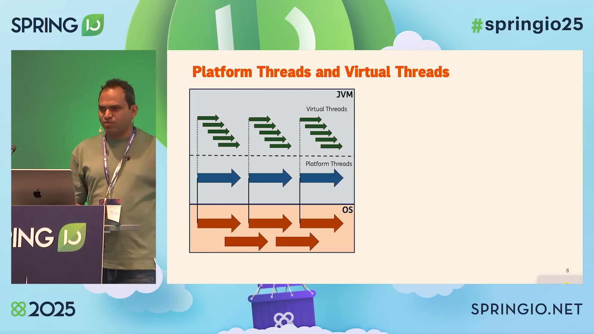
Virtual Threads
Cheap, plentiful, JVM-managed threads. The substrate everything else is built on.
Structured Concurrency
Control structures for concurrency — fork/join, lifetime, error propagation.
Scoped Values
Immutable, scope-bound context — the safe, virtual-thread-friendly replacement for ThreadLocal.
Virtual Threads
The substrate. A virtual thread is a lightweight user-mode thread managed by the JVM. It runs on top of a platform (carrier) thread, but it can be unmounted the moment it blocks on I/O — letting another virtual thread take its place. No more wasting an entire OS thread on a network round-trip.
The mental model: platform vs. virtual
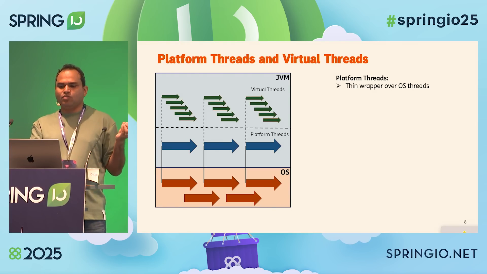
Thin wrapper over an OS thread
1-to-1 mapping. Creating one is expensive. You pool them via an
ExecutorService. The pool size caps your concurrency.
Lightweight, JVM-managed
Cheap to create (a few KB of memory). Throw them away when done — the GC reclaims them. Pooling virtual threads is an anti-pattern.
Mounting and unmounting
A virtual thread on its own cannot execute anything. It needs a carrier (platform) thread. The new virtual thread scheduler mounts a virtual thread onto a carrier when it needs CPU and unmounts it the moment it blocks (network, DB, lock, sleep). In a typical I/O-bound app, threads spend most of their life waiting — so the same few carriers can serve an enormous population of virtual threads.
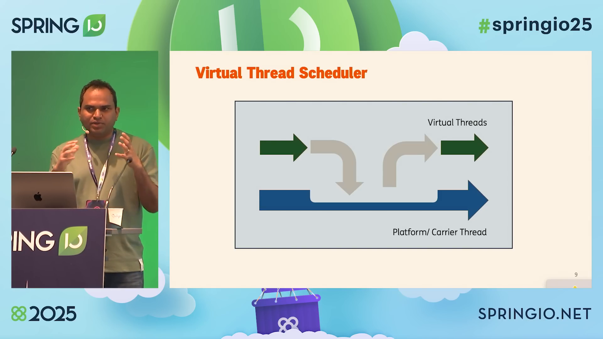
Why this matters
In an I/O-bound server, your CPU can be kept busy with only a handful of platform threads if the workload is virtual-threaded. The blocking I/O call you used to fear is no longer a cost — it's a context switch the JVM handles for free.
Demo 1 — flip a switch in Spring Boot
The talk starts with a one-controller Spring Boot app. With one property, Tomcat is told to handle every request on a fresh virtual thread.
# Just one line — every Tomcat worker is now a virtual thread
spring.threads.virtual.enabled=true
package com.balarawool.bootloom.abank.controller;
import org.springframework.web.bind.annotation.GetMapping;
import org.springframework.web.bind.annotation.RestController;
@RestController
public class HelloController {
@GetMapping("/hello")
public String hello() {
return "Hello from " + Thread.currentThread();
}
}
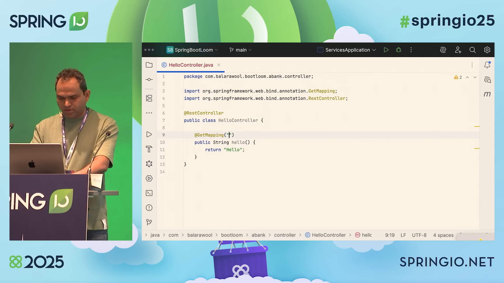
/hello.Hit it before flipping the switch — you see a platform thread:
$ http :8082/hello
# Before: spring.threads.virtual.enabled is unset
Hello from Thread[#43, http-nio-8082-exec-1,5,main]
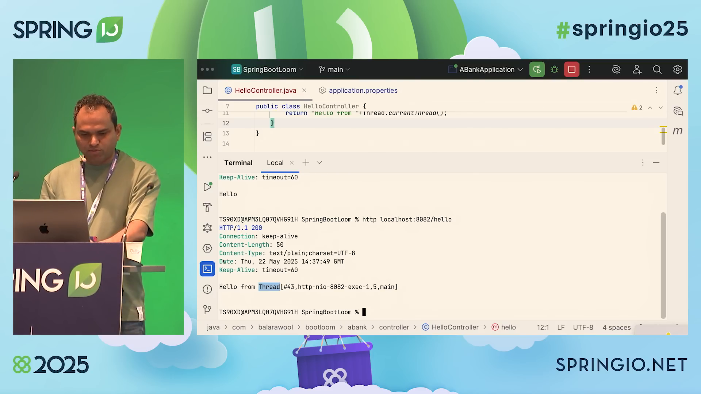
http-nio-8082-exec-1.Set the property, restart, hit it again — now it's a virtual thread:
$ http :8082/hello
# After: spring.threads.virtual.enabled=true
Hello from VirtualThread[#48,tomcat-handler-0]/runnable@ForkJoinPool-1-worker-1
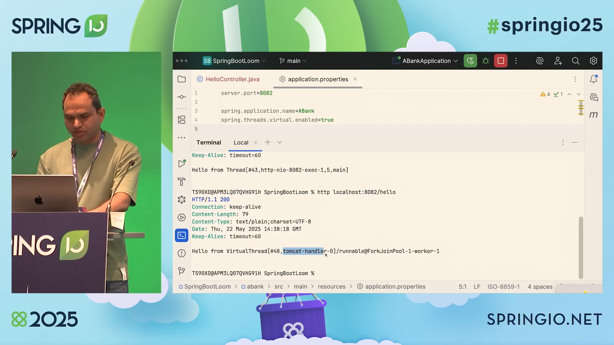
VirtualThread[#48,tomcat-handler-0]
per request. The carrier thread (ForkJoinPool-1-worker-1) is a
regular platform thread — it's just no longer the unit of concurrency.
Rule of thumb
If your code blocks, virtual threads will scale. Don't rewrite your blocking JDBC/HTTP code into reactive cascades — just leave it blocking. The JVM mounts/unmounts for you.
Structured Concurrency
Inspired by structured programming, structured concurrency gives you control structures for concurrency. When the flow of execution splits into concurrent sub-flows, they rejoin in the same code block. The lifetime of children is bounded by the lifetime of the parent scope.
Why virtual threads unlock it
With platform threads you can't afford a thread per task, so a single thread represents a "process" that runs many tasks. With virtual threads you can have one thread per task, and arrange the tasks into a tree that mirrors your business logic. That's the whole point.
"Just as structured programming helps us write readable programs, structured concurrency helps us write readable concurrent programs."
Three common patterns
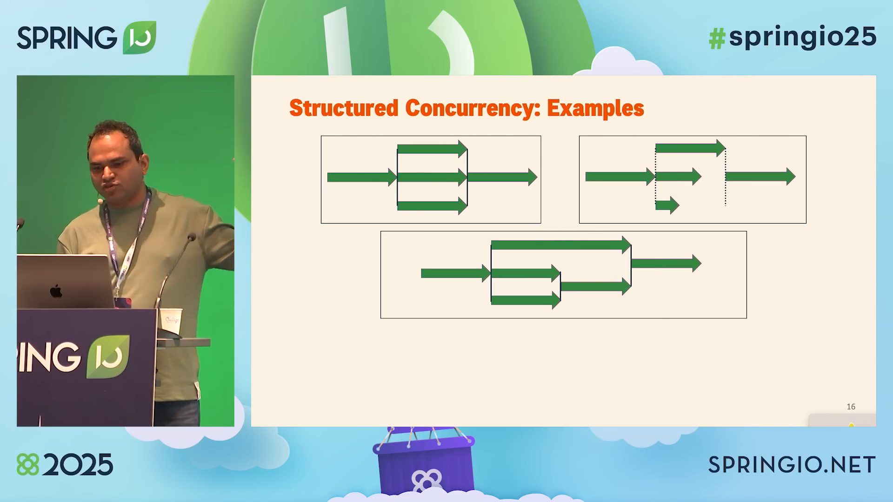
What you get for free
🛑 Short-circuiting on failure
If any subtask fails, the others are immediately cancelled. No wasted work, no dangling promises, no half-completed business transactions.
↩ Cancellation propagation
If the parent scope is cancelled (e.g. the request is aborted), every child task is cancelled with it.
🪞 Code mirrors the structure
The implementation literally resembles the task tree. What you draw is what you write.
🔍 Observability
Thread dumps show the parent-child hierarchy of virtual threads, so you can trace any task to its root.
Demo 2 — the loan application
A customer applies for a loan. The bank needs four pieces of data before it can quote an offer: customer details, account details, loan history, and a credit score (with two competing score providers). The task tree looks like this:
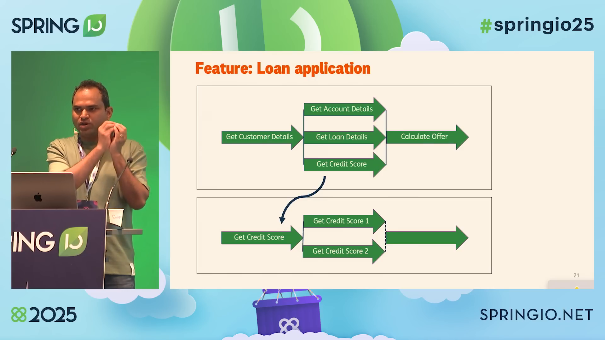
{accounts, loans, credit score}; credit score -> {score1, score2}">
In code, that's a try-with-resources over a
StructuredTaskScope, four fork() calls, one
join(), and a task.get() per result. That's it.
Pattern A — wait-all (accounts + loans)
public Offer applyForLoan(@RequestBody LoanApplicationRequest request) {
try (var scope = StructuredTaskScope.open()) {
// Each fork() runs on its own virtual thread
var task1 = scope.fork(() -> accountService.getAccountsInfo(currentCustomer));
var task2 = scope.fork(() -> loanService.getLoansInfo(currentCustomer));
// Wait for BOTH to finish
scope.join();
var accounts = task1.get();
var loans = task2.get();
// ...continue with credit score + calculate offer...
} catch (InterruptedException e) {
throw new ABankException(e);
}
}
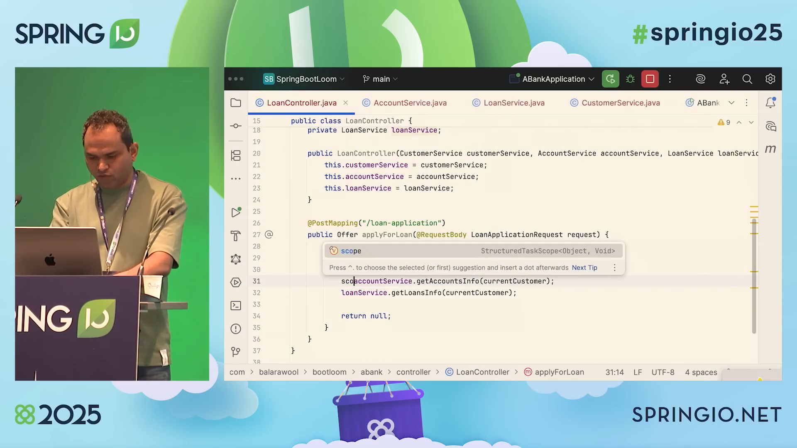
StructuredTaskScope<Object, Void> as
the type for scope. Note scope.fork(...) on the lines below.
The 4-step pattern is the same everywhere you see StructuredTaskScope:
try-with-resources guarantees it is closed.Subtask<T>.Joiner policy.Pattern B — wait-any-success (credit score)
Two competing credit-score services exist; we only need one answer.
Pass a different Joiner to open():
public CreditScore getCreditScore(Customer customer) {
// Continue as soon as ONE task succeeds; cancel the rest.
// If all fail, throw.
try (var scope = StructuredTaskScope.open(
Joiner.<CreditScore>anySuccessfulResultOrThrow())) {
scope.fork(() -> getCreditScoreFrom("credit-score1", customer));
scope.fork(() -> getCreditScoreFrom("credit-score2", customer));
// join() returns the first successful result.
var score = scope.join();
return score;
} catch (InterruptedException e) {
throw new ABankException(e);
}
}
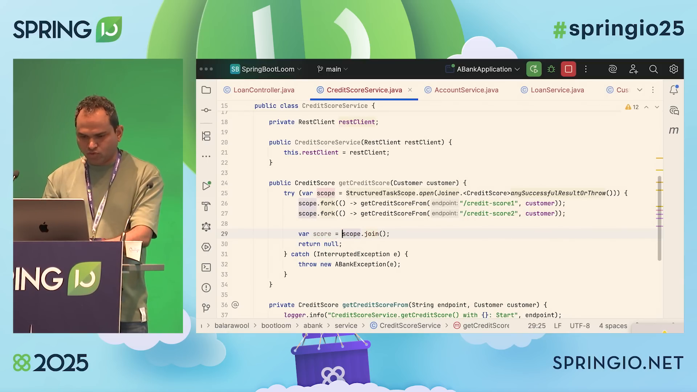
anySuccessfulResultOrThrow(), scope.join() returns the
first successful result and cancels the rest.
Putting both patterns together in the controller
public Offer applyForLoan(@RequestBody LoanApplicationRequest request) {
var currentCustomer = customerService.getCustomer(request.customerId());
try (var scope = StructuredTaskScope.open()) {
// Two wait-all subtasks
var task1 = scope.fork(() -> accountService.getAccountsInfo(currentCustomer));
var task2 = scope.fork(() -> loanService.getLoansInfo(currentCustomer));
// One wait-any subtask — already a StructuredTaskScope internally
var task3 = scope.fork(() -> creditScoreService.getCreditScore(currentCustomer));
scope.join();
var accounts = task1.get();
var loans = task2.get();
var creditScore = task3.get();
return loanService.calculateOffer(
currentCustomer, accounts, loans, creditScore,
request.amount(), request.purpose()
);
} catch (InterruptedException e) {
throw new ABankException(e);
}
}
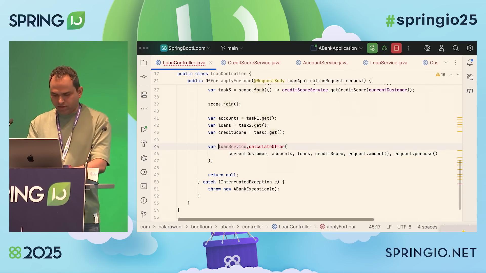
StructuredTaskScope vs. CompletableFuture
Both APIs can produce the same results. The difference is that
StructuredTaskScope gives you an imperative shape that
mirrors the business tree, with no callbacks, no thenApply/thenCompose
chains, and no risk of an orphaned future outliving its request.
Scoped Values
A ScopedValue is the virtual-thread-friendly successor to ThreadLocal:
immutable, shared across all threads in a scope, and automatically freed
when the scope ends. Use it to carry request-scoped context (current customer,
correlation ID, trace context, …) without passing it through every method signature.
What ThreadLocal gave us — and where it breaks
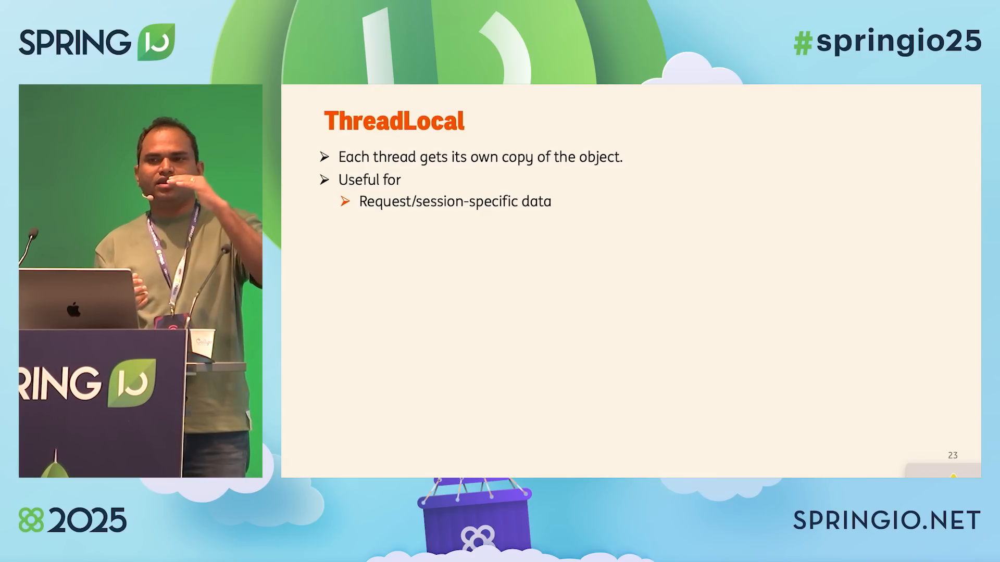
ThreadLocal too, but
the usual problems get amplified.
🧬 Unconstrained mutability
Anyone with the variable can call .set(...) at any time.
Classic shared-mutable-state headache.
⏳ Unbounded lifetime
You must remember to call .remove(). Forgetting means the
next request reusing that pool thread inherits the previous request's data.
📈 Expensive inheritance
With InheritableThreadLocal each child thread gets a copy.
With millions of virtual threads that's a lot of copies.
What changes with ScopedValue
ThreadLocal | ScopedValue | |
|---|---|---|
| Mutability | Mutable (get/set) |
Immutable |
| Lifetime | Until you remove() (or never) |
Bounded by the dynamic scope of where(...) |
| Sharing | Each thread has its own copy | One shared instance, read-only |
| Inheritance | Copied per child thread (expensive w/ virtual threads) | Inherited automatically through StructuredTaskScope |
| Cleanup | Manual (remove) |
Automatic at end of scope |
The wins, summarised
Immutable = no shared-mutability bugs.
One shared instance = no per-child memory cost even with millions of virtual threads.
Bounded scope = no leaks from a forgotten remove().
Demo 3 — define a RequestContext
package com.balarawool.bootloom.abank.domain;
import com.balarawool.bootloom.abank.domain.Model.Customer;
public class RequestContext {
public static final ScopedValue<Customer> CURRENT_CUSTOMER =
ScopedValue.newInstance();
}
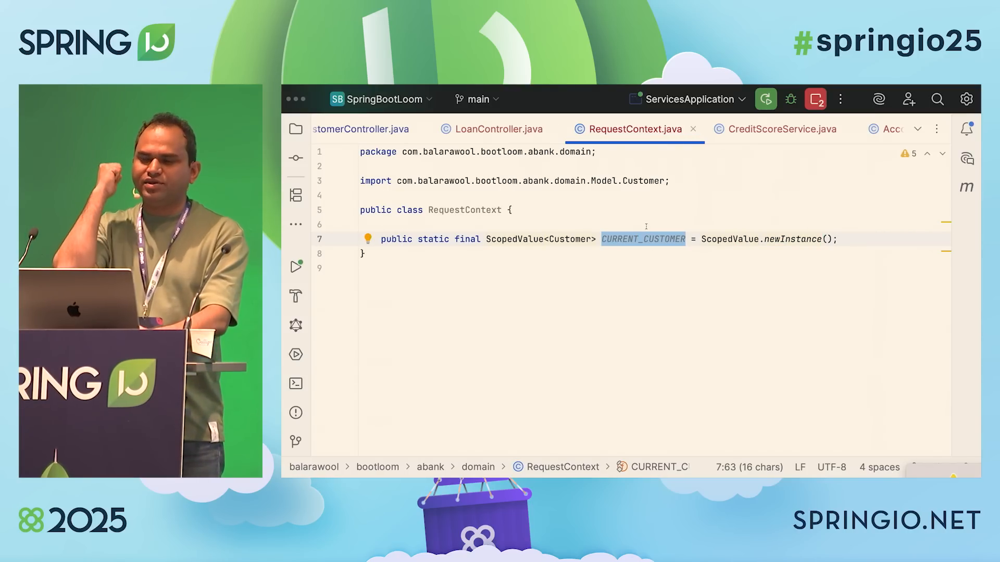
ScopedValue is just a typed slot. You set
it once at the top of the scope and read it from anywhere downstream.
Setting & reading the value
In the controller, wrap the whole request handler with
ScopedValue.where(...). Everything downstream — including
children forked by StructuredTaskScope — sees the same value:
public Offer applyForLoan(@RequestBody LoanApplicationRequest request) {
var currentCustomer = customerService.getCustomer(request.customerId());
// Bind the customer to the scope for everything inside .call(...)
return RequestContext.withCustomer(currentCustomer)
.call(() -> {
var info = getCustomerInfo();
return loanService.calculateOffer(
info.accounts, info.loans, info.creditScore,
request.amount(), request.purpose());
});
}
Inside getCustomerInfo we just read it — no parameters, no plumbing:
private CustomerInfo getCustomerInfo() {
// No need to pass `customer` around — just read it from the scope.
var currentCustomer = RequestContext.getCurrentCustomer();
try (var scope = StructuredTaskScope.open()) {
var task1 = scope.fork(accountService::getAccountsInfo);
var task2 = scope.fork(loanService::getLoansInfo);
var task3 = scope.fork(creditScoreService::getCreditScore);
scope.join();
return new CustomerInfo(task1.get(), task2.get(), task3.get());
} catch (InterruptedException e) {
throw new ABankException(e);
}
}
private record CustomerInfo(List<Account> accounts,
List<Loan> loans,
CreditScore creditScore) {}
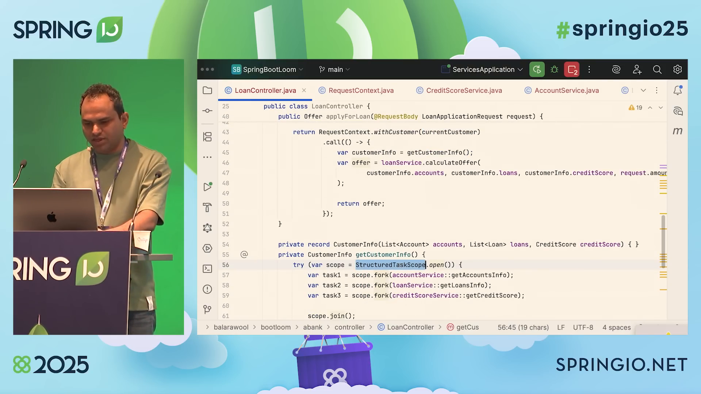
customer is bound at the top, every service can drop its
customer parameter entirely — and the fork() lines
collapse to scope.fork(accountService::getAccountsInfo).
The clean controller after refactoring
Before scoped values, every service had to accept the customer as a parameter
and the controller had to thread it through every call. After scoped values, the
signature of the services becomes parameterless and the controller body shrinks
to almost nothing.
Customer is passed everywhere
accountService.getAccountsInfo(currentCustomer);
loanService.getLoansInfo(currentCustomer);
creditScoreService.getCreditScore(currentCustomer);
loanService.calculateOffer(
currentCustomer, accounts, loans,
creditScore, amount, purpose);
Customer is read from the scope
scope.fork(accountService::getAccountsInfo);
scope.fork(loanService::getLoansInfo);
scope.fork(creditScoreService::getCreditScore);
loanService.calculateOffer(
accounts, loans, creditScore, amount, purpose);
Inheritance for free
Because StructuredTaskScope is the integration point between
ScopedValue and threads, every child virtual thread
forked inside the scope automatically sees the same scoped value — without
you doing anything. That's why the credit-score subtask can read
RequestContext.getCurrentCustomer() with no plumbing.
All three, in one happy-path request
The final demo fires POST /loan-application. The server log shows
the four I/O calls starting in parallel — and only joining when all are done —
exactly the way the task tree was drawn.
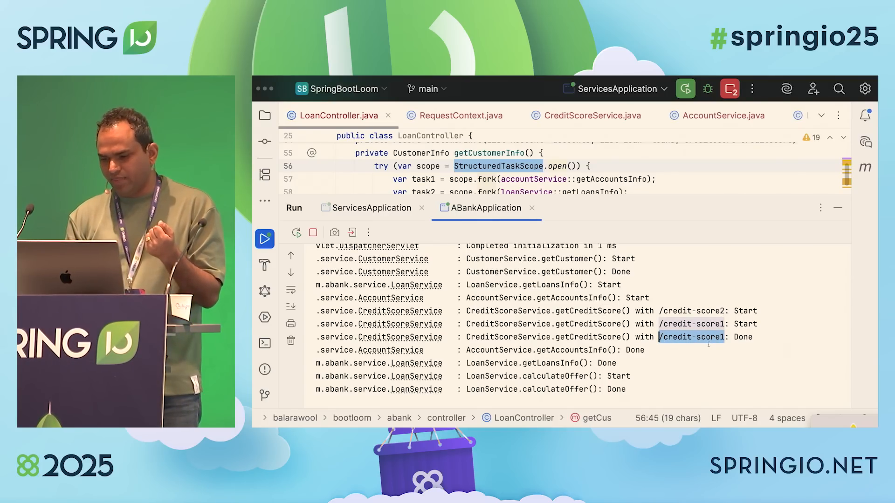
getAccountsInfo, getLoansInfo,
getCreditScore /credit-score1, getCreditScore /credit-score2)
start before any of them finishes. Only after all four complete does
calculateOffer run. This is structured concurrency behaving
exactly like the diagram.
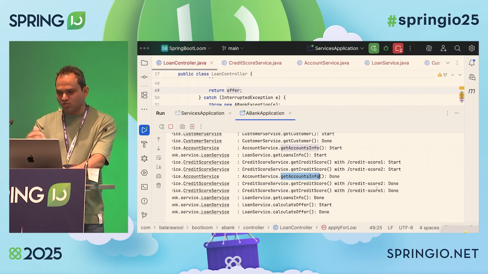
credit-score1 and credit-score2 both return; the
anySuccessfulResultOrThrow() joiner picks the first one and
cancels the other. calculateOffer then produces the final offer.
The flow, end to end
virtual thread
(blocking call)
ScopedValueaccounts / loans / credit
offer, return
What you deleted along the way
| Pain point | How Loom fixed it |
|---|---|
Threading the customer object through every method signature. |
Bind once via ScopedValue.where(...); read anywhere downstream. |
Wrapping every blocking call in CompletableFuture + callbacks. |
Call them directly. Virtual threads handle the blocking. |
| Manually cancelling siblings when one task fails. | Structured task scope does it on join(). |
| Reading the customer from a getter on a request DTO that you forgot to set. | Throw NoSuchElementException via orElseThrow() at the leaf. |
What happens when things go wrong?
The talk closes with two failure scenarios. Both are designed to show that structured concurrency's short-circuit + error propagation do the right thing automatically — no manual cleanup code.
Scenario 1 — accounts service fails
Force AccountService to throw. Expected: all siblings
(loans, both credit-score calls) are
cancelled; the request returns 500.
try (var scope = StructuredTaskScope.open()) {
var task1 = scope.fork(() -> accountService.getAccountsInfo(customer));
var task2 = scope.fork(() -> loanService.getLoansInfo(customer));
var task3 = scope.fork(() -> creditScoreService.getCreditScore(customer));
scope.join();
// ... use results ...
} catch (FailedException e) {
logger.error("Failed exception", e);
throw e;
}
What you see
join() throws FailedException as soon as any
subtask fails. The other subtasks are interrupted and their virtual
threads exit cleanly. The client sees a 500. No half-completed business
state.
Scenario 2 — one credit-score provider fails
Force credit-score1 to throw while credit-score2 is
healthy. Expected: the offer still succeeds because
anySuccessfulResultOrThrow() only requires one successful
result.
// Both forks attempt the call. The joiner picks the survivor.
try (var scope = StructuredTaskScope.open(
Joiner.<CreditScore>anySuccessfulResultOrThrow())) {
scope.fork(() -> getCreditScoreFrom("credit-score1", customer));
scope.fork(() -> getCreditScoreFrom("credit-score2", customer));
return scope.join();
}
What you see
credit-score2 returns first → its value flows back, the
in-flight credit-score1 is cancelled, and the rest of the
pipeline runs to completion. The user gets an offer.
Scenario 3 — both credit-score providers fail
Now both providers throw. join() throws
FailedException, the outer scope in the controller also fails,
and the client sees a 500. Exactly the behaviour you want.
| Scenario | What the user gets | Why |
|---|---|---|
| Accounts service fails | 500 | join() surfaces FailedException; siblings cancelled. |
| One credit-score provider fails | Offer returned | anySuccessfulResultOrThrow succeeds on the healthy one. |
| Both credit-score providers fail | 500 | No successful result → join() throws. |
What to remember
Virtual threads are cheap
Use one per task. Don't pool them. The blocking call is no longer your enemy.
Concurrency has structure
Mirror your business tree with StructuredTaskScope. Pick the joiner that matches your policy.
Context is scoped, not leaked
Use ScopedValue for request context. Immutable, bounded, automatically inherited by children.
The "one elevator pitch" version
With these three features together you write concurrent programs that look like sequential programs — same readability, same reasoning, same lifetime, same error handling. That is the leap structured programming made decades ago, now applied to concurrency.
Cheat-sheet: which feature do I reach for?
| I need… | Reach for… |
|---|---|
| To handle many concurrent requests without huge thread pools. | Virtual threads (often just spring.threads.virtual.enabled=true) |
| To run N sub-tasks in parallel and combine their results. | StructuredTaskScope.open() + fork() + join() |
| To succeed on the first response of N parallel calls. | Joiner.anySuccessfulResultOrThrow() |
| To fail the whole pipeline if any sub-task fails. | The default joiner (allUntil / throw) — short-circuiting is automatic. |
| To pass request-scoped data without threading it through every method. | ScopedValue.where(...).call(...) |
To replace a buggy ThreadLocal that leaks between pooled requests. | ScopedValue |
Source, video & further reading
🎥 The original talk
Balkrishna Rawool, "Virtual Threads, Structured Concurrency and Scoped Values — Putting it all together", Spring I/O 2025 (Barcelona, May 2025). Follow the original recording linked above for the full talk.
💻 Source code
The Maven project SpringBootLoom (modules abank + services) was shared during the talk. The QR code on
the closing slide links to the GitHub repo — see the final slide image
below.
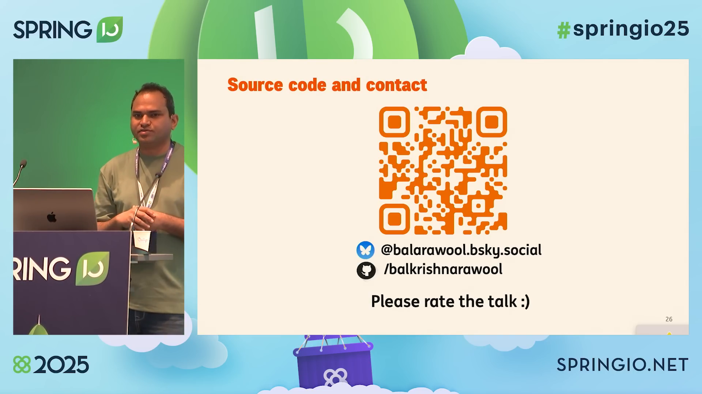
@balarawool.bsky.social, /balkrishnarawool).
OpenJDK / JEP references
JEP 444 — Virtual Threads
Final in JDK 21.
JEP 453 — Structured Concurrency
Preview as of this talk.
JEP 506 — Scoped Values
Final in JDK 25.
Talk timeline at a glance
Speaker, motivation, the three pillars and their JDK status.
Architecture diagram, mount/unmount, the HelloController one-property switch.
Patterns, benefits, LoanController, CreditScoreService with anySuccessfulResultOrThrow().
ThreadLocal pain points, RequestContext, binding at the top, method references, failure scenarios.